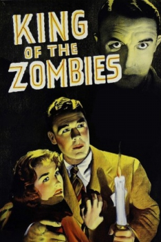
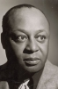

Country:United States, 67 minutes
Spoken languages:English
Genres:Horror, Adventure, Comedy
Director(s):Jean Yarbrough
Writer(s):Edmond Kelso
Video Codec:Unknown
Number: 88


Certification:NR
Storyline:
During World War II, a small plane somewhere over the Caribbean runs low on fuel and is blown off course by a storm. Guided by a faint radio signal, they crash-land on an island. The passenger, his manservant and the pilot take refuge in a mansion owned by a doctor. The quick-witted yet easily-frightened manservant soon becomes convinced the mansion is haunted by zombies and ghosts.
Cast: 

Medium: Original DVD,
Comments: Part of: 100 Greatest Horror Classics
Loaned: No
Aspect ratio: Unknown